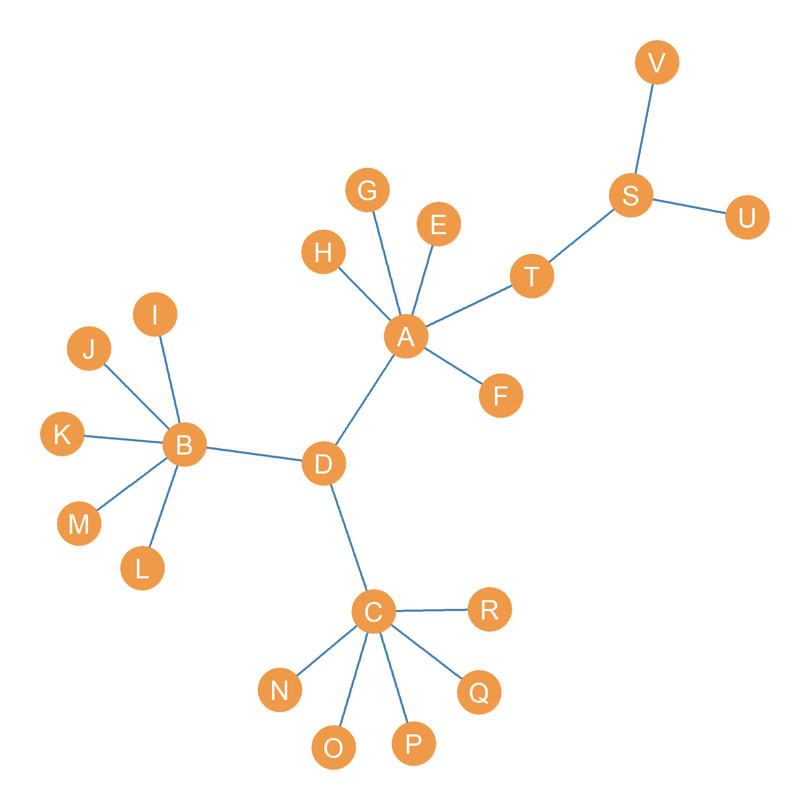
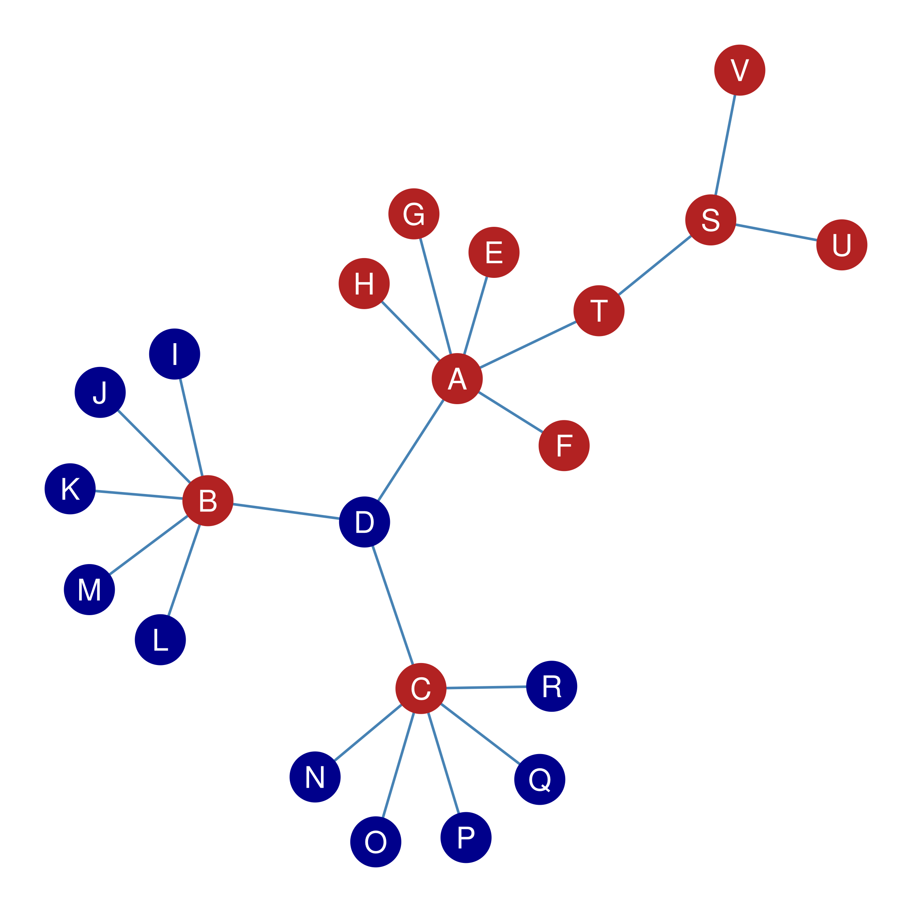
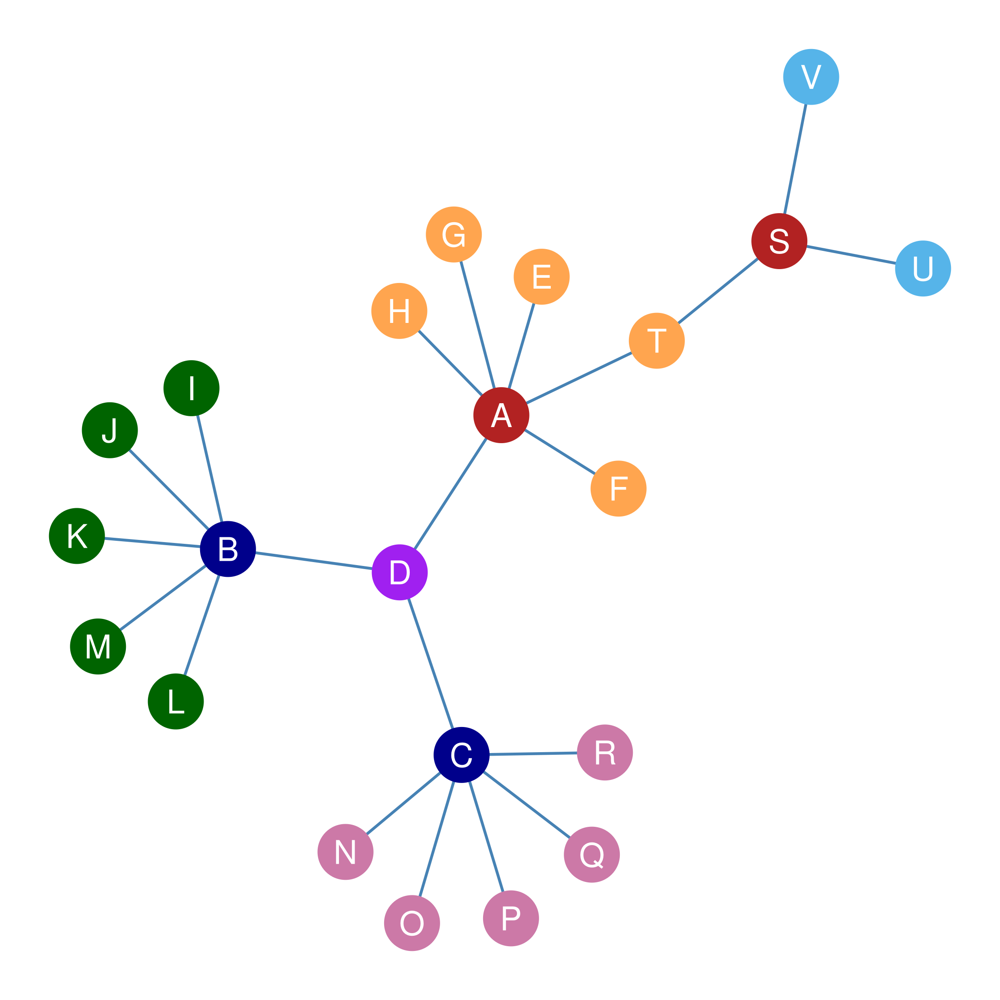
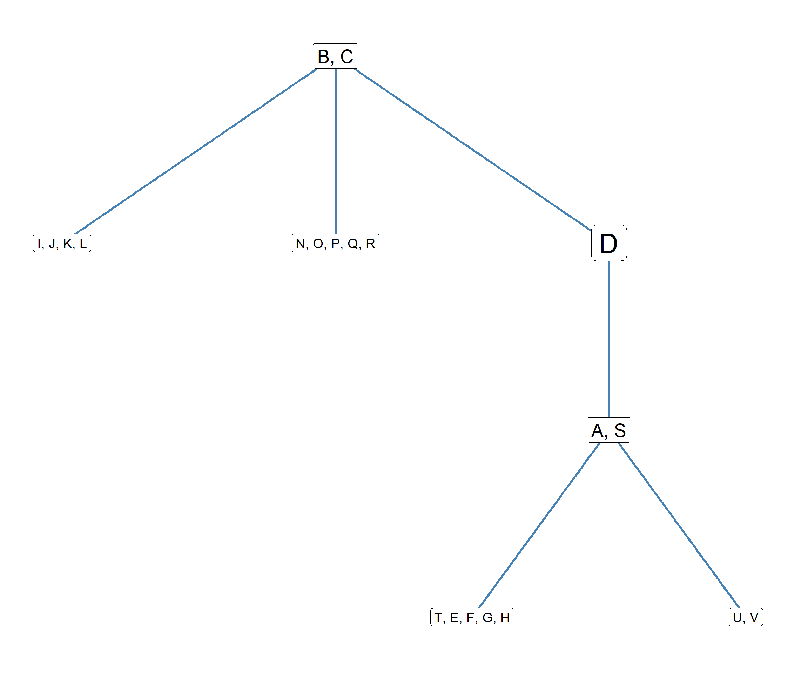

| 0 | 0 | 1 | 1 | 0 | 0 |
41 Blockmodeling
41.1 The Correlation Distance
It turns out there is an even fancier way to find out whether two nodes in a graph are structurally similar. It relies on a more complicated measure of distance called the correlation distance. This measure compares the row (or column) vectors of nodes in a graph and returns a number between \(-1\) and \(+1\). When it comes to structural equivalence, the correlation distance works like this:
- Pairs of structurally equivalent nodes get a \(+1\). Nodes that are almost structurally equivalent but not quite (they are structurally similar) get a positive number larger than zero. The closer that number is to \(+1\) the more structurally similar the two nodes are.
- Nodes that are completely different from one another (that is connect to completely disjoint sets of neighbors) get a \(-1\). In this case, nodes are opposites: Every time one node i has a \(1\) in their row vector in the adjacency matrix, the other has a \(0\) and vice versa. Nodes that are structurally dissimilar thus get a negative number between zero and \(-1\). The closer that number is to \(-1\), the more structurally dissimilar the two nodes are.
- Nodes that have an even combination of similarities and differences in their pattern of connectivity to others get a number close to zero, with \(0\) indicating that two nodes have an even number of commonalities and differences.
The correlation distance between two nodes k and l is computed using the following formula:
\[ d^{corr}_{k, l} = \frac{ \sum_j (a_{(k)j} - \overline{a}_{(k)j}) \times (a_{(l)j} - \overline{a}_{(l)j}) } { \sqrt{ \sum_j (a_{(k)j} - \overline{a}_{(k)j})^2 \times \sum_j (a_{(l)j} - \overline{a}_{(l)j})^2 } } \tag{41.1}\]
Equation 41.1 looks like a monstrously complicated one, but it is actually not that involved.
Let’s go through each components that we have already encountered in the lesson structural equivalence and structural similarity:
- \(a_{(k)j}\) is the row (or column) vector for node k in the adjacency matrix.
- \(a_{(l)j}\) is the row (or column) vector for node l in the adjacency matrix.
Now let’s introduce ourselves to some new friends. For instance, what the heck is \(\overline{a}_{(k)j}\)? The little “bar” on top the \(a\) indicates that we are taking the mean or the average of the elements of the row vector.
In equation form:
\[ \overline{a}_{(k)j} = \frac{\sum_j a_{kj}}{N} \tag{41.2}\]
In Equation 41.2, \(\sum_i a_{kj}\) is the sum of all the elements in the vector, and \(N\) is the length of the vector, which is equivalent to the order of the graph from which adjacency matrix came from (the number of nodes in the network).
So for instance, in Table 39.1, the row vector for node A is:
Which implies:
\[ \sum_i a_{(A)j} = 0 + 0 + 1 + 1 + 0 + 0 = 2 \]
And we know that \(N = 6\), so that implies:
\[ \overline{a}_{(A)j} = \frac{\sum_i a_{Aj}}{N} = \frac{2}{6}=0.33 \] The term \(\overline{a}_{(k)j}\) is called the row mean for node k in the adjacency matrix. Just like we can compute row means, we can also compute column means by using the elements of the column vector \(\overline{a}_{(k)i}\)
Now that we know what the row means are, we can make sense of the term \((a_{(k)j} - \overline{a}_{(k)j})\) in Equation 41.1. This is a vector composed of the differences between the row vector entries in the adjacency matrix and the row mean for that node. So in the case of node A and the row vector in Table 41.1 that would imply:
| (0 - 0.33) | (0 - 0.33) | (1 - 0.33) | (1 - 0.33) | (0 - 0.33) | (0 - 0.33) |
| -0.33 | -0.33 | 0.67 | 0.67 | -0.33 | -0.33 |
Which implies: \[ \sum_j (a_{(k)j} - \overline{a}_{(k)j}) = -0.33 -0.33 + 0.67 + 0.67 -0.33 -0.33 = 0.02 \]
The numerator of Equation 41.1, just says: “Take the entries in the row vector for the first node, and create a new vector composed of the those entries minus the row means and sum the vector. Then do the same for the other node and multiply the two numbers” And in the denominator of the equation we just square the same vectors sum them, multiply each of the two numbers and take the square root of the result product. Once we have the numerator and denominator we can evaluate the fraction and compute the correlation distance between those two nodes.
When we do that for each pair of nodes in Table 39.1, we end up with the structural similarity matrix shown in Table 41.3, based on the correlation distance.
| A | B | C | D | E | F | |
|---|---|---|---|---|---|---|
| A | – | 1 | -0.71 | -0.71 | 0.71 | -0.32 |
| B | 1 | – | -0.71 | -0.71 | 0.71 | -0.32 |
| C | -0.71 | -0.71 | – | 1 | -1 | 0.45 |
| D | -0.71 | -0.71 | 1 | – | -1 | 0.45 |
| E | 0.71 | 0.71 | -1 | -1 | – | -0.45 |
| F | -0.32 | -0.32 | 0.45 | 0.45 | -0.45 | – |
In Table 41.3, the structurally equivalent pairs of nodes, A and B and C and D have \(d^{corr} = 1.0\). Nodes that are completely non-equivalent like C and E and D and E have \(d^{corr} = -1.0\). Nodes that are structurally similar, but not equivalent, like nodes C and F (\(d^{corr} = 0.45\)) get a positive number that is less than \(1.0\).
41.2 Iterated Correlational Distances: CONCOR
What happens if we were to try to use Equation 41.1 to find the correlation distance of a correlation distance matrix? If we were to do this and use Table 41.3 as our input matrix, we end up with Table 41.4 (a).
41.2.1 We Need to go Deepah
Now, as Leo (when stuck in a dream, about a dream, about a dream…) always says: “We need to go deeper.”1 And, indeed, we can. We can take the correlation distance of the nodes based on Table 41.4 (a). If we do that, we end up with the entries in Table 41.4 (b). If we keep on going, we end up with the entries in Table 41.4 (c). Note that in Table 41.4 (c), there are only two values for all the entries: \(+1\) and \(-1\)!
| A | B | C | D | E | F | |
|---|---|---|---|---|---|---|
| A | – | 1 | -0.97 | -0.97 | 0.97 | -0.84 |
| B | 1 | – | -0.97 | -0.97 | 0.97 | -0.84 |
| C | -0.97 | -0.97 | – | 1 | -1 | 0.84 |
| D | -0.97 | -0.97 | 1 | – | -1 | 0.84 |
| E | 0.97 | 0.97 | -1 | -1 | – | -0.84 |
| F | -0.84 | -0.84 | 0.84 | 0.84 | -0.84 | – |
| A | B | C | D | E | F | |
|---|---|---|---|---|---|---|
| A | – | 1 | -1 | -1 | 1 | -0.99 |
| B | 1 | – | -1 | -1 | 1 | -0.99 |
| C | -1 | -1 | – | 1 | -1 | 0.99 |
| D | -1 | -1 | 1 | – | -1 | 0.99 |
| E | 1 | 1 | -1 | -1 | – | -0.99 |
| F | -0.99 | -0.99 | 0.99 | 0.99 | -0.99 | – |
| A | B | C | D | E | F | |
|---|---|---|---|---|---|---|
| A | – | 1 | -1 | -1 | 1 | -1 |
| B | 1 | – | -1 | -1 | 1 | -1 |
| C | -1 | -1 | – | 1 | -1 | 1 |
| D | -1 | -1 | 1 | – | -1 | 1 |
| E | 1 | 1 | -1 | -1 | – | -1 |
| F | -1 | -1 | 1 | 1 | -1 | – |
More importantly, as shown in Table 41.5, the structurally equivalent nodes have exactly the same pattern of \(+1\)s and \(-1\)s across the rows. This procedure of iterated correlations, invented by a team of sociologists and psychologists at Harvard University in the mid-1970s (Breiger et al. 1975), is called CONCOR—and acronym for the hard to remember title of “convergence of iterate correlations’’—and is designed to extract structurally equivalent positions from networks even when the input matrix is just based on structural similarities.
| A | B | C | D | E | F | |
|---|---|---|---|---|---|---|
| A | -- | 1 | -1 | -1 | 1 | -1 |
| B | 1 | -- | -1 | -1 | 1 | -1 |
| C | -1 | -1 | -- | 1 | -1 | 1 |
| D | -1 | -1 | 1 | -- | -1 | 1 |
| E | 1 | 1 | -1 | -1 | -- | -1 |
| F | -1 | -1 | 1 | 1 | -1 | -- |
41.3 Blockmodeling
The example we considered previously concerns the relatively small network shown in Figure 39.1. What happens when we apply the method of iterated correlations (CONCOR) to a bigger network, something like the one shown in Figure 41.1?

Well, we can begin by computing the correlation distance across all ,the \(V=22\) nodes in that network using Equation 41.1. The result of that looks like Table 41.6 (a). Note that even before we do any iterated correlations of correlation matrices we can see that the peripheral, single-connection nodes \(E, F, G, H\), \(I, J, K, L, M\) and \(N, O, P, Q, R\) are perfectly structurally equivalent. This makes sense, because all the nodes in each of these three groups have identical neighborhoods, since they happen to be connected to the same central node \(A\) for the first group, \(B\) for the second group and \(C\) for the third group. Note also that \(U\) and \(V\) are structurally equivalent, since their neighborhoods are the same: Their single connection is to node \(S\).
| A | B | C | D | T | E | F | G | H | I | J | K | L | M | N | O | P | Q | R | S | U | V | |
|---|---|---|---|---|---|---|---|---|---|---|---|---|---|---|---|---|---|---|---|---|---|---|
| A | 1.00 | -0.15 | -0.15 | -0.24 | -0.19 | -0.13 | -0.13 | -0.13 | -0.13 | -0.13 | -0.13 | -0.13 | -0.13 | -0.13 | -0.13 | -0.13 | -0.13 | -0.13 | -0.13 | 0.05 | -0.13 | -0.13 |
| B | -0.15 | 1.00 | -0.15 | -0.24 | -0.19 | -0.13 | -0.13 | -0.13 | -0.13 | -0.13 | -0.13 | -0.13 | -0.13 | -0.13 | -0.13 | -0.13 | -0.13 | -0.13 | -0.13 | -0.24 | -0.13 | -0.13 |
| C | -0.15 | -0.15 | 1.00 | -0.24 | -0.19 | -0.13 | -0.13 | -0.13 | -0.13 | -0.13 | -0.13 | -0.13 | -0.13 | -0.13 | -0.13 | -0.13 | -0.13 | -0.13 | -0.13 | -0.24 | -0.13 | -0.13 |
| D | -0.24 | -0.24 | -0.24 | 1.00 | 0.34 | 0.55 | 0.55 | 0.55 | 0.55 | 0.55 | 0.55 | 0.55 | 0.55 | 0.55 | 0.55 | 0.55 | 0.55 | 0.55 | 0.55 | -0.16 | -0.09 | -0.09 |
| T | -0.19 | -0.19 | -0.19 | 0.34 | 1.00 | 0.69 | 0.69 | 0.69 | 0.69 | -0.07 | -0.07 | -0.07 | -0.07 | -0.07 | -0.07 | -0.07 | -0.07 | -0.07 | -0.07 | -0.13 | 0.69 | 0.69 |
| E | -0.13 | -0.13 | -0.13 | 0.55 | 0.69 | 1.00 | 1.00 | 1.00 | 1.00 | -0.05 | -0.05 | -0.05 | -0.05 | -0.05 | -0.05 | -0.05 | -0.05 | -0.05 | -0.05 | -0.09 | -0.05 | -0.05 |
| F | -0.13 | -0.13 | -0.13 | 0.55 | 0.69 | 1.00 | 1.00 | 1.00 | 1.00 | -0.05 | -0.05 | -0.05 | -0.05 | -0.05 | -0.05 | -0.05 | -0.05 | -0.05 | -0.05 | -0.09 | -0.05 | -0.05 |
| G | -0.13 | -0.13 | -0.13 | 0.55 | 0.69 | 1.00 | 1.00 | 1.00 | 1.00 | -0.05 | -0.05 | -0.05 | -0.05 | -0.05 | -0.05 | -0.05 | -0.05 | -0.05 | -0.05 | -0.09 | -0.05 | -0.05 |
| H | -0.13 | -0.13 | -0.13 | 0.55 | 0.69 | 1.00 | 1.00 | 1.00 | 1.00 | -0.05 | -0.05 | -0.05 | -0.05 | -0.05 | -0.05 | -0.05 | -0.05 | -0.05 | -0.05 | -0.09 | -0.05 | -0.05 |
| I | -0.13 | -0.13 | -0.13 | 0.55 | -0.07 | -0.05 | -0.05 | -0.05 | -0.05 | 1.00 | 1.00 | 1.00 | 1.00 | 1.00 | -0.05 | -0.05 | -0.05 | -0.05 | -0.05 | -0.09 | -0.05 | -0.05 |
| J | -0.13 | -0.13 | -0.13 | 0.55 | -0.07 | -0.05 | -0.05 | -0.05 | -0.05 | 1.00 | 1.00 | 1.00 | 1.00 | 1.00 | -0.05 | -0.05 | -0.05 | -0.05 | -0.05 | -0.09 | -0.05 | -0.05 |
| K | -0.13 | -0.13 | -0.13 | 0.55 | -0.07 | -0.05 | -0.05 | -0.05 | -0.05 | 1.00 | 1.00 | 1.00 | 1.00 | 1.00 | -0.05 | -0.05 | -0.05 | -0.05 | -0.05 | -0.09 | -0.05 | -0.05 |
| L | -0.13 | -0.13 | -0.13 | 0.55 | -0.07 | -0.05 | -0.05 | -0.05 | -0.05 | 1.00 | 1.00 | 1.00 | 1.00 | 1.00 | -0.05 | -0.05 | -0.05 | -0.05 | -0.05 | -0.09 | -0.05 | -0.05 |
| M | -0.13 | -0.13 | -0.13 | 0.55 | -0.07 | -0.05 | -0.05 | -0.05 | -0.05 | 1.00 | 1.00 | 1.00 | 1.00 | 1.00 | -0.05 | -0.05 | -0.05 | -0.05 | -0.05 | -0.09 | -0.05 | -0.05 |
| N | -0.13 | -0.13 | -0.13 | 0.55 | -0.07 | -0.05 | -0.05 | -0.05 | -0.05 | -0.05 | -0.05 | -0.05 | -0.05 | -0.05 | 1.00 | 1.00 | 1.00 | 1.00 | 1.00 | -0.09 | -0.05 | -0.05 |
| O | -0.13 | -0.13 | -0.13 | 0.55 | -0.07 | -0.05 | -0.05 | -0.05 | -0.05 | -0.05 | -0.05 | -0.05 | -0.05 | -0.05 | 1.00 | 1.00 | 1.00 | 1.00 | 1.00 | -0.09 | -0.05 | -0.05 |
| P | -0.13 | -0.13 | -0.13 | 0.55 | -0.07 | -0.05 | -0.05 | -0.05 | -0.05 | -0.05 | -0.05 | -0.05 | -0.05 | -0.05 | 1.00 | 1.00 | 1.00 | 1.00 | 1.00 | -0.09 | -0.05 | -0.05 |
| Q | -0.13 | -0.13 | -0.13 | 0.55 | -0.07 | -0.05 | -0.05 | -0.05 | -0.05 | -0.05 | -0.05 | -0.05 | -0.05 | -0.05 | 1.00 | 1.00 | 1.00 | 1.00 | 1.00 | -0.09 | -0.05 | -0.05 |
| R | -0.13 | -0.13 | -0.13 | 0.55 | -0.07 | -0.05 | -0.05 | -0.05 | -0.05 | -0.05 | -0.05 | -0.05 | -0.05 | -0.05 | 1.00 | 1.00 | 1.00 | 1.00 | 1.00 | -0.09 | -0.05 | -0.05 |
| S | 0.05 | -0.24 | -0.24 | -0.16 | -0.13 | -0.09 | -0.09 | -0.09 | -0.09 | -0.09 | -0.09 | -0.09 | -0.09 | -0.09 | -0.09 | -0.09 | -0.09 | -0.09 | -0.09 | 1.00 | -0.09 | -0.09 |
| U | -0.13 | -0.13 | -0.13 | -0.09 | 0.69 | -0.05 | -0.05 | -0.05 | -0.05 | -0.05 | -0.05 | -0.05 | -0.05 | -0.05 | -0.05 | -0.05 | -0.05 | -0.05 | -0.05 | -0.09 | 1.00 | 1.00 |
| V | -0.13 | -0.13 | -0.13 | -0.09 | 0.69 | -0.05 | -0.05 | -0.05 | -0.05 | -0.05 | -0.05 | -0.05 | -0.05 | -0.05 | -0.05 | -0.05 | -0.05 | -0.05 | -0.05 | -0.09 | 1.00 | 1.00 |
| A | B | C | D | T | E | F | G | H | I | J | K | L | M | N | O | P | Q | R | S | U | V | |
|---|---|---|---|---|---|---|---|---|---|---|---|---|---|---|---|---|---|---|---|---|---|---|
| A | 1 | 1 | 1 | -1 | 1 | 1 | 1 | 1 | 1 | -1 | -1 | -1 | -1 | -1 | -1 | -1 | -1 | -1 | -1 | 1 | 1 | 1 |
| B | 1 | 1 | 1 | -1 | 1 | 1 | 1 | 1 | 1 | -1 | -1 | -1 | -1 | -1 | -1 | -1 | -1 | -1 | -1 | 1 | 1 | 1 |
| C | 1 | 1 | 1 | -1 | 1 | 1 | 1 | 1 | 1 | -1 | -1 | -1 | -1 | -1 | -1 | -1 | -1 | -1 | -1 | 1 | 1 | 1 |
| D | -1 | -1 | -1 | 1 | -1 | -1 | -1 | -1 | -1 | 1 | 1 | 1 | 1 | 1 | 1 | 1 | 1 | 1 | 1 | -1 | -1 | -1 |
| T | 1 | 1 | 1 | -1 | 1 | 1 | 1 | 1 | 1 | -1 | -1 | -1 | -1 | -1 | -1 | -1 | -1 | -1 | -1 | 1 | 1 | 1 |
| E | 1 | 1 | 1 | -1 | 1 | 1 | 1 | 1 | 1 | -1 | -1 | -1 | -1 | -1 | -1 | -1 | -1 | -1 | -1 | 1 | 1 | 1 |
| F | 1 | 1 | 1 | -1 | 1 | 1 | 1 | 1 | 1 | -1 | -1 | -1 | -1 | -1 | -1 | -1 | -1 | -1 | -1 | 1 | 1 | 1 |
| G | 1 | 1 | 1 | -1 | 1 | 1 | 1 | 1 | 1 | -1 | -1 | -1 | -1 | -1 | -1 | -1 | -1 | -1 | -1 | 1 | 1 | 1 |
| H | 1 | 1 | 1 | -1 | 1 | 1 | 1 | 1 | 1 | -1 | -1 | -1 | -1 | -1 | -1 | -1 | -1 | -1 | -1 | 1 | 1 | 1 |
| I | -1 | -1 | -1 | 1 | -1 | -1 | -1 | -1 | -1 | 1 | 1 | 1 | 1 | 1 | 1 | 1 | 1 | 1 | 1 | -1 | -1 | -1 |
| J | -1 | -1 | -1 | 1 | -1 | -1 | -1 | -1 | -1 | 1 | 1 | 1 | 1 | 1 | 1 | 1 | 1 | 1 | 1 | -1 | -1 | -1 |
| K | -1 | -1 | -1 | 1 | -1 | -1 | -1 | -1 | -1 | 1 | 1 | 1 | 1 | 1 | 1 | 1 | 1 | 1 | 1 | -1 | -1 | -1 |
| L | -1 | -1 | -1 | 1 | -1 | -1 | -1 | -1 | -1 | 1 | 1 | 1 | 1 | 1 | 1 | 1 | 1 | 1 | 1 | -1 | -1 | -1 |
| M | -1 | -1 | -1 | 1 | -1 | -1 | -1 | -1 | -1 | 1 | 1 | 1 | 1 | 1 | 1 | 1 | 1 | 1 | 1 | -1 | -1 | -1 |
| N | -1 | -1 | -1 | 1 | -1 | -1 | -1 | -1 | -1 | 1 | 1 | 1 | 1 | 1 | 1 | 1 | 1 | 1 | 1 | -1 | -1 | -1 |
| O | -1 | -1 | -1 | 1 | -1 | -1 | -1 | -1 | -1 | 1 | 1 | 1 | 1 | 1 | 1 | 1 | 1 | 1 | 1 | -1 | -1 | -1 |
| P | -1 | -1 | -1 | 1 | -1 | -1 | -1 | -1 | -1 | 1 | 1 | 1 | 1 | 1 | 1 | 1 | 1 | 1 | 1 | -1 | -1 | -1 |
| Q | -1 | -1 | -1 | 1 | -1 | -1 | -1 | -1 | -1 | 1 | 1 | 1 | 1 | 1 | 1 | 1 | 1 | 1 | 1 | -1 | -1 | -1 |
| R | -1 | -1 | -1 | 1 | -1 | -1 | -1 | -1 | -1 | 1 | 1 | 1 | 1 | 1 | 1 | 1 | 1 | 1 | 1 | -1 | -1 | -1 |
| S | 1 | 1 | 1 | -1 | 1 | 1 | 1 | 1 | 1 | -1 | -1 | -1 | -1 | -1 | -1 | -1 | -1 | -1 | -1 | 1 | 1 | 1 |
| U | 1 | 1 | 1 | -1 | 1 | 1 | 1 | 1 | 1 | -1 | -1 | -1 | -1 | -1 | -1 | -1 | -1 | -1 | -1 | 1 | 1 | 1 |
| V | 1 | 1 | 1 | -1 | 1 | 1 | 1 | 1 | 1 | -1 | -1 | -1 | -1 | -1 | -1 | -1 | -1 | -1 | -1 | 1 | 1 | 1 |
| V | U | S | H | G | F | E | T | C | A | B | R | Q | P | O | N | M | L | K | J | D | I | |
|---|---|---|---|---|---|---|---|---|---|---|---|---|---|---|---|---|---|---|---|---|---|---|
| V | 1 | 1 | 1 | 1 | 1 | 1 | 1 | 1 | 1 | 1 | 1 | -1 | -1 | -1 | -1 | -1 | -1 | -1 | -1 | -1 | -1 | -1 |
| U | 1 | 1 | 1 | 1 | 1 | 1 | 1 | 1 | 1 | 1 | 1 | -1 | -1 | -1 | -1 | -1 | -1 | -1 | -1 | -1 | -1 | -1 |
| S | 1 | 1 | 1 | 1 | 1 | 1 | 1 | 1 | 1 | 1 | 1 | -1 | -1 | -1 | -1 | -1 | -1 | -1 | -1 | -1 | -1 | -1 |
| H | 1 | 1 | 1 | 1 | 1 | 1 | 1 | 1 | 1 | 1 | 1 | -1 | -1 | -1 | -1 | -1 | -1 | -1 | -1 | -1 | -1 | -1 |
| G | 1 | 1 | 1 | 1 | 1 | 1 | 1 | 1 | 1 | 1 | 1 | -1 | -1 | -1 | -1 | -1 | -1 | -1 | -1 | -1 | -1 | -1 |
| F | 1 | 1 | 1 | 1 | 1 | 1 | 1 | 1 | 1 | 1 | 1 | -1 | -1 | -1 | -1 | -1 | -1 | -1 | -1 | -1 | -1 | -1 |
| E | 1 | 1 | 1 | 1 | 1 | 1 | 1 | 1 | 1 | 1 | 1 | -1 | -1 | -1 | -1 | -1 | -1 | -1 | -1 | -1 | -1 | -1 |
| T | 1 | 1 | 1 | 1 | 1 | 1 | 1 | 1 | 1 | 1 | 1 | -1 | -1 | -1 | -1 | -1 | -1 | -1 | -1 | -1 | -1 | -1 |
| C | 1 | 1 | 1 | 1 | 1 | 1 | 1 | 1 | 1 | 1 | 1 | -1 | -1 | -1 | -1 | -1 | -1 | -1 | -1 | -1 | -1 | -1 |
| A | 1 | 1 | 1 | 1 | 1 | 1 | 1 | 1 | 1 | 1 | 1 | -1 | -1 | -1 | -1 | -1 | -1 | -1 | -1 | -1 | -1 | -1 |
| B | 1 | 1 | 1 | 1 | 1 | 1 | 1 | 1 | 1 | 1 | 1 | -1 | -1 | -1 | -1 | -1 | -1 | -1 | -1 | -1 | -1 | -1 |
| R | -1 | -1 | -1 | -1 | -1 | -1 | -1 | -1 | -1 | -1 | -1 | 1 | 1 | 1 | 1 | 1 | 1 | 1 | 1 | 1 | 1 | 1 |
| Q | -1 | -1 | -1 | -1 | -1 | -1 | -1 | -1 | -1 | -1 | -1 | 1 | 1 | 1 | 1 | 1 | 1 | 1 | 1 | 1 | 1 | 1 |
| P | -1 | -1 | -1 | -1 | -1 | -1 | -1 | -1 | -1 | -1 | -1 | 1 | 1 | 1 | 1 | 1 | 1 | 1 | 1 | 1 | 1 | 1 |
| O | -1 | -1 | -1 | -1 | -1 | -1 | -1 | -1 | -1 | -1 | -1 | 1 | 1 | 1 | 1 | 1 | 1 | 1 | 1 | 1 | 1 | 1 |
| N | -1 | -1 | -1 | -1 | -1 | -1 | -1 | -1 | -1 | -1 | -1 | 1 | 1 | 1 | 1 | 1 | 1 | 1 | 1 | 1 | 1 | 1 |
| M | -1 | -1 | -1 | -1 | -1 | -1 | -1 | -1 | -1 | -1 | -1 | 1 | 1 | 1 | 1 | 1 | 1 | 1 | 1 | 1 | 1 | 1 |
| L | -1 | -1 | -1 | -1 | -1 | -1 | -1 | -1 | -1 | -1 | -1 | 1 | 1 | 1 | 1 | 1 | 1 | 1 | 1 | 1 | 1 | 1 |
| K | -1 | -1 | -1 | -1 | -1 | -1 | -1 | -1 | -1 | -1 | -1 | 1 | 1 | 1 | 1 | 1 | 1 | 1 | 1 | 1 | 1 | 1 |
| J | -1 | -1 | -1 | -1 | -1 | -1 | -1 | -1 | -1 | -1 | -1 | 1 | 1 | 1 | 1 | 1 | 1 | 1 | 1 | 1 | 1 | 1 |
| D | -1 | -1 | -1 | -1 | -1 | -1 | -1 | -1 | -1 | -1 | -1 | 1 | 1 | 1 | 1 | 1 | 1 | 1 | 1 | 1 | 1 | 1 |
| I | -1 | -1 | -1 | -1 | -1 | -1 | -1 | -1 | -1 | -1 | -1 | 1 | 1 | 1 | 1 | 1 | 1 | 1 | 1 | 1 | 1 | 1 |
What happens when we take the correlation distance of the correlation distance matrix shown in Table 41.6 (a), and the correlation distance of the resulting matrix, and keep going until we only have zeros and ones? The results is Table 41.6 (b). This matrix seems to reveal a much deeper pattern of commonalities in structural positions across the nodes in Figure 41.1. In fact, if we were a conspiracy theorist like Charlie from Always Sunny in Philadelphia, we might even surmise that there is a secret pattern that can be revealed if we reshuffled the rows and the columns of the matrix (without changing any of the numbers of course!).2
If we do that, we end up with Table 41.6 (c). So it turns out that there is indeed a secret pattern! The reshuffling shows that the nodes in the network can be divided into two blocks such within blocks all nodes are structurally similar (and some structurally equivalent) and across blocks, all nodes are structurally dissimilar. Thus \(V, U, S, H, G, F, E, T, C, A, B\) are members of one structurally similar block (let’s called them “Block 1”), and nodes \(R, Q, P, O, N, M, L, K, J, D, I\) are members of another structurally similar block (let’s called them “Block 2”). Nodes in “Block 1” are structurally dissimilar from nodes in “Block 2,” but structurally similar to one another and vice versa. To illustrate, Figure 41.2 is the same as Figure 41.1, but this time nodes are colored by their memberships in two separate blocks.

Note that we haven’t changed any of the information in Table 41.6 (b) to get Table 41.6 (c). If you check, the row and column entries for each node in both figures are identical. It’s just that we changed the way the rows ordered vertically and the way the columns are ordered horizontally. For instance, node \(A\)’s pattern of connections is negatively correlated with node \(I\)’s in Table 41.6 (b), and has the same negative correlation entry in Table 41.6 (c). The same goes for each one of node \(A\)’s other correlations, and the same for each node in the table. Table 41.6 (b) and Table 41.6 (c) contain the same information it’s just that Table 41.6 (c) makes it easier to see a hidden pattern.
This property of the method of iterated correlations is the basis of a strategy for uncovering blocks of structurally similar actors in a network developed by a team of sociologists, physicists, and mathematicians working at Harvard in the 1970s. The technique is called blockmodeling (White et al. 1976). Let’s see how it works.
41.3.1 We Need to go Deepah
Of course, as Leo always says: “We need to go deeper.” And indeed we can. What happens if we do the same analysis as above, but this time in the two node-induced subgraphs defined by the set of structurally similar nodes in each of the two blocks we uncovered in the original graph? Then we get Table 41.7 (a) and Table 41.7 (b).
| B | A | C | S | V | U | T | E | F | H | G | |
|---|---|---|---|---|---|---|---|---|---|---|---|
| B | 1 | 1 | 1 | 1 | 1 | 1 | -1 | -1 | -1 | -1 | -1 |
| A | 1 | 1 | 1 | 1 | 1 | 1 | -1 | -1 | -1 | -1 | -1 |
| C | 1 | 1 | 1 | 1 | 1 | 1 | -1 | -1 | -1 | -1 | -1 |
| S | 1 | 1 | 1 | 1 | 1 | 1 | -1 | -1 | -1 | -1 | -1 |
| V | 1 | 1 | 1 | 1 | 1 | 1 | -1 | -1 | -1 | -1 | -1 |
| U | 1 | 1 | 1 | 1 | 1 | 1 | -1 | -1 | -1 | -1 | -1 |
| T | -1 | -1 | -1 | -1 | -1 | -1 | 1 | 1 | 1 | 1 | 1 |
| E | -1 | -1 | -1 | -1 | -1 | -1 | 1 | 1 | 1 | 1 | 1 |
| F | -1 | -1 | -1 | -1 | -1 | -1 | 1 | 1 | 1 | 1 | 1 |
| H | -1 | -1 | -1 | -1 | -1 | -1 | 1 | 1 | 1 | 1 | 1 |
| G | -1 | -1 | -1 | -1 | -1 | -1 | 1 | 1 | 1 | 1 | 1 |
| I | J | K | M | L | D | N | O | P | R | Q | |
|---|---|---|---|---|---|---|---|---|---|---|---|
| I | 1 | 1 | 1 | 1 | 1 | 0 | -1 | -1 | -1 | -1 | -1 |
| J | 1 | 1 | 1 | 1 | 1 | 0 | -1 | -1 | -1 | -1 | -1 |
| K | 1 | 1 | 1 | 1 | 1 | 0 | -1 | -1 | -1 | -1 | -1 |
| M | 1 | 1 | 1 | 1 | 1 | 0 | -1 | -1 | -1 | -1 | -1 |
| L | 1 | 1 | 1 | 1 | 1 | 0 | -1 | -1 | -1 | -1 | -1 |
| D | 0 | 0 | 0 | 0 | 0 | 1 | 0 | 0 | 0 | 0 | 0 |
| N | -1 | -1 | -1 | -1 | -1 | 0 | 1 | 1 | 1 | 1 | 1 |
| O | -1 | -1 | -1 | -1 | -1 | 0 | 1 | 1 | 1 | 1 | 1 |
| P | -1 | -1 | -1 | -1 | -1 | 0 | 1 | 1 | 1 | 1 | 1 |
| R | -1 | -1 | -1 | -1 | -1 | 0 | 1 | 1 | 1 | 1 | 1 |
| Q | -1 | -1 | -1 | -1 | -1 | 0 | 1 | 1 | 1 | 1 | 1 |
We can see that Table 41.6 (a) separates our original Block 1 into two further sub-blocks. Let’s call them “Block 1a” and “Block 1b.” Block 1a is composed of nodes \(A, B, C, S, U, V\) and Block 1b is composed of nodes \(E, F, G, H, T\). Table 41.6 (b) separates our original Block 2 into three further sub-blocks. There’s the block composed of nodes \(I, J, K, L, M\). Let’s call this “Block 2a”, the block composed of nodes \(N, O, P, Q, R\). Let’s call this “Block 2b.” Then, there’s node \(D\). Note that this node is only structurally similar to itself and is neither similar nor dissimilar to the other nodes in the subgraph \(d^{corr} = 0\), so it occupies a position all by itself! Let’s call it “Block 2c.”
| S | C | B | A | V | U | |
|---|---|---|---|---|---|---|
| S | 1 | 1 | 1 | 1 | -1 | -1 |
| C | 1 | 1 | 1 | 1 | -1 | -1 |
| B | 1 | 1 | 1 | 1 | -1 | -1 |
| A | 1 | 1 | 1 | 1 | -1 | -1 |
| V | -1 | -1 | -1 | -1 | 1 | 1 |
| U | -1 | -1 | -1 | -1 | 1 | 1 |
| B | C | A | S | |
|---|---|---|---|---|
| B | 1 | 1 | -1 | -1 |
| C | 1 | 1 | -1 | -1 |
| A | -1 | -1 | 1 | 1 |
| S | -1 | -1 | 1 | 1 |
Now let’s do a couple of final splits of the subgraph composed of nodes \(A, B, C, S, U, V\). This is shown in Table 41.8. The first split separates nodes in block \(A, B, C, S\) from those in block \(U, V\) (Table 41.8 (a)). The second splits the nodes in subgraph \(A, B, C, S\) into two blocks composed of \(A, S\) and \(B, C\), respectively (Table 41.8 (b)).

Figure 41.3 shows the nodes in Figure 41.1 colored according to our final block partition. It is clear that the blockmodeling approach captures patterns of structural similarity. For instance, all the single-connection nodes connected to more central nodes get assigned to their own position: Block 1b: \(E, F, G, H, T\), Block 2a: \(I, J, K, L, M\), and Block 2b: \(N, O, P, Q, R\). The most central node \(D\) (in terms of Eigenvector centrality) occupies a unique position in the graph. Two of the three central nodes (in terms of degree centrality) \(B, C\) get assigned to their own position. Meanwhile \(A, S\) form their own structurally similar block. Finally, \(U, V\) also form their own structurally similar block as both are structurally equivalent in the orignal graph.
41.3.2 The Blocked Adjancency Matrix
What happens if we were to go back fo the adjacency matrix corresponding to Figure 41.1, and then reshuffle the rows and columns to correspond to all these wonderful blocks we have uncovered? Well, we would en up with something like Table 41.9. This is called the blocked adjacency matrix. In the blocked adjacency matrix, the division between the nodes corresponding to each block of structurally similar nodes in Table 41.7 and Table 41.8 is marked by thick black lines going across the rows and columns.
Each diagonal rectangle in Table 41.9 corresponds to within-block connections. Each off-diagonal rectangle corresponds to between block connections. There are two kinds of rectangles in the blocked adjacency matrix. First, there are rectangles that only contains zero entries. These are called zero blocks. For instance the top-left rectangle in Table 41.9 is a zero block. Then there rectangles that have some non-zero entries in them (ones, since this is a binary adjacency matrix). These are called one blocks. For instance, the fourth rectangle going down the rows (corresponding to the block that nodes \(B, C\) belong to) is a one block.
| I | J | K | L | M | N | O | P | Q | R | T | E | F | G | H | B | C | A | S | U | V | D | |
|---|---|---|---|---|---|---|---|---|---|---|---|---|---|---|---|---|---|---|---|---|---|---|
| I | 0 | 0 | 0 | 0 | 0 | 0 | 0 | 0 | 0 | 0 | 0 | 0 | 0 | 0 | 0 | 1 | 0 | 0 | 0 | 0 | 0 | 0 |
| J | 0 | 0 | 0 | 0 | 0 | 0 | 0 | 0 | 0 | 0 | 0 | 0 | 0 | 0 | 0 | 1 | 0 | 0 | 0 | 0 | 0 | 0 |
| K | 0 | 0 | 0 | 0 | 0 | 0 | 0 | 0 | 0 | 0 | 0 | 0 | 0 | 0 | 0 | 1 | 0 | 0 | 0 | 0 | 0 | 0 |
| L | 0 | 0 | 0 | 0 | 0 | 0 | 0 | 0 | 0 | 0 | 0 | 0 | 0 | 0 | 0 | 1 | 0 | 0 | 0 | 0 | 0 | 0 |
| M | 0 | 0 | 0 | 0 | 0 | 0 | 0 | 0 | 0 | 0 | 0 | 0 | 0 | 0 | 0 | 1 | 0 | 0 | 0 | 0 | 0 | 0 |
| N | 0 | 0 | 0 | 0 | 0 | 0 | 0 | 0 | 0 | 0 | 0 | 0 | 0 | 0 | 0 | 0 | 1 | 0 | 0 | 0 | 0 | 0 |
| O | 0 | 0 | 0 | 0 | 0 | 0 | 0 | 0 | 0 | 0 | 0 | 0 | 0 | 0 | 0 | 0 | 1 | 0 | 0 | 0 | 0 | 0 |
| P | 0 | 0 | 0 | 0 | 0 | 0 | 0 | 0 | 0 | 0 | 0 | 0 | 0 | 0 | 0 | 0 | 1 | 0 | 0 | 0 | 0 | 0 |
| Q | 0 | 0 | 0 | 0 | 0 | 0 | 0 | 0 | 0 | 0 | 0 | 0 | 0 | 0 | 0 | 0 | 1 | 0 | 0 | 0 | 0 | 0 |
| R | 0 | 0 | 0 | 0 | 0 | 0 | 0 | 0 | 0 | 0 | 0 | 0 | 0 | 0 | 0 | 0 | 1 | 0 | 0 | 0 | 0 | 0 |
| T | 0 | 0 | 0 | 0 | 0 | 0 | 0 | 0 | 0 | 0 | 0 | 0 | 0 | 0 | 0 | 0 | 0 | 1 | 1 | 0 | 0 | 0 |
| E | 0 | 0 | 0 | 0 | 0 | 0 | 0 | 0 | 0 | 0 | 0 | 0 | 0 | 0 | 0 | 0 | 0 | 1 | 0 | 0 | 0 | 0 |
| F | 0 | 0 | 0 | 0 | 0 | 0 | 0 | 0 | 0 | 0 | 0 | 0 | 0 | 0 | 0 | 0 | 0 | 1 | 0 | 0 | 0 | 0 |
| G | 0 | 0 | 0 | 0 | 0 | 0 | 0 | 0 | 0 | 0 | 0 | 0 | 0 | 0 | 0 | 0 | 0 | 1 | 0 | 0 | 0 | 0 |
| H | 0 | 0 | 0 | 0 | 0 | 0 | 0 | 0 | 0 | 0 | 0 | 0 | 0 | 0 | 0 | 0 | 0 | 1 | 0 | 0 | 0 | 0 |
| B | 1 | 1 | 1 | 1 | 1 | 0 | 0 | 0 | 0 | 0 | 0 | 0 | 0 | 0 | 0 | 0 | 0 | 0 | 0 | 0 | 0 | 1 |
| C | 0 | 0 | 0 | 0 | 0 | 1 | 1 | 1 | 1 | 1 | 0 | 0 | 0 | 0 | 0 | 0 | 0 | 0 | 0 | 0 | 0 | 1 |
| A | 0 | 0 | 0 | 0 | 0 | 0 | 0 | 0 | 0 | 0 | 1 | 1 | 1 | 1 | 1 | 0 | 0 | 0 | 0 | 0 | 0 | 1 |
| S | 0 | 0 | 0 | 0 | 0 | 0 | 0 | 0 | 0 | 0 | 1 | 0 | 0 | 0 | 0 | 0 | 0 | 0 | 0 | 1 | 1 | 0 |
| U | 0 | 0 | 0 | 0 | 0 | 0 | 0 | 0 | 0 | 0 | 0 | 0 | 0 | 0 | 0 | 0 | 0 | 0 | 1 | 0 | 0 | 0 |
| V | 0 | 0 | 0 | 0 | 0 | 0 | 0 | 0 | 0 | 0 | 0 | 0 | 0 | 0 | 0 | 0 | 0 | 0 | 1 | 0 | 0 | 0 |
| D | 0 | 0 | 0 | 0 | 0 | 0 | 0 | 0 | 0 | 0 | 0 | 0 | 0 | 0 | 0 | 1 | 1 | 1 | 0 | 0 | 0 | 0 |
Zero-blocks indicate that the members of the row block don’t have any connections with the members the column block (which can include themselves!). For instance, the zero-block in the top-left corner of the blocked adjacency matrix in Table 41.9 indicates that the members of this block are not connected to one another in the network (and we can verify from Figure 41.3 that this is indeed the case).
One blocks indicate that the members of the column block share some connections with the members of the column block (which can also include themselves!). For instance, the one-block in the fourth rectangle going down the rows (corresponding to the block that nodes \(B, C\) belong to) tells us that members of this block are connected to at least one member of the \(I, J, K, L, M\) block (and we can verify from Figure 41.3 that this is indeed the case, since \(B\) is connected to all of them).
41.3.3 The Image Matrix
From this reshuffled adjacency matrix, we can get to a reduced image matrix containing the relations not between the nodes in the graph, but between the blocks in the graph. The way we proceed to construct the image matrix is as follows:
First we create an empty matrix \(\mathbf{B}\) of dimensions \(b \times b\) where \(B\) is the number of blocks in the blockmodel. In our example, \(b = 7\) so the image matrix has seven rows and seven columns. The \(ij^{th}\) cell in the image matrix \(\mathbf{B}\) records the relationship between row block i and column block j in the blockmodel.
Second, we put a zero in the image matrix if the rectangle corresponding to the relationship between blocks i and j in Table 41.9 is a zero-block.
Third, we put a one in the image matrix if the rectangle corresponding to the relationship between blocks i and j in Table 41.9 is a one-block.
The result is Table 41.10.
| I, J, K, L | N, O, P, Q, R | T, E, F, G, H | B, C | A, S | U, V | D | |
|---|---|---|---|---|---|---|---|
| I, J, K, L | 0 | 0 | 0 | 1 | 0 | 0 | 0 |
| N, O, P, Q, R | 0 | 0 | 0 | 1 | 0 | 0 | 0 |
| T, E, F, G, H | 0 | 0 | 0 | 0 | 1 | 0 | 0 |
| B, C | 1 | 1 | 0 | 0 | 0 | 0 | 1 |
| A, S | 0 | 0 | 1 | 0 | 0 | 1 | 1 |
| U, V | 0 | 0 | 0 | 0 | 1 | 0 | 0 |
| D | 0 | 0 | 0 | 1 | 1 | 0 | 0 |
So the big blocked adjacency matrix in Table 41.6 (c) can be reduced to the image matrix shown Table 41.10, summarizing the relations between the blocks in the graph. This matrix, can then even be represented as a graph, so that we can see the pattern of relations between blocks! This is shown in Figure 41.4

This is how blockmodeling works!
References
Breiger, Ronald L, Scott A Boorman, and Phipps Arabie. 1975. “An Algorithm for Clustering Relational Data with Applications to Social Network Analysis and Comparison with Multidimensional Scaling.” Journal of Mathematical Psychology 12 (3): 328–83.
White, Harrison C, Scott A Boorman, and Ronald L Breiger. 1976. “Social Structure from Multiple Networks. I. Blockmodels of Roles and Positions.” American Journal of Sociology 81 (4): 730–80.